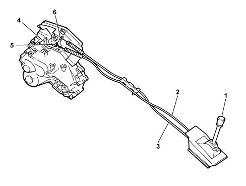

MANUAL GEARBOX EXTERNAL CONTROL
- Path
- Descriptions > 21 GEARBOX UNIT > MANUAL GEARBOX EXTERNAL CONTROL
- Kind
- system description
- Applies to
- engines: 2.4 JTD 20v; all production periods
- Interactive page
- https://sloeber94.github.io/elrnDB-aBrrSpdr/en/#/946003099
Applies to: engines: 2.4 JTD 20v; all production periods
These external controls are designed to ensure quiet operation and precision manoeuvres.

- 1. Gear control lever
- 2. Gear engagement cable
- 3. Gear selection cable
- 4. Support for gear selection and engagement cable
- 5. Gear engagement lever
- 6. Gear selection lever